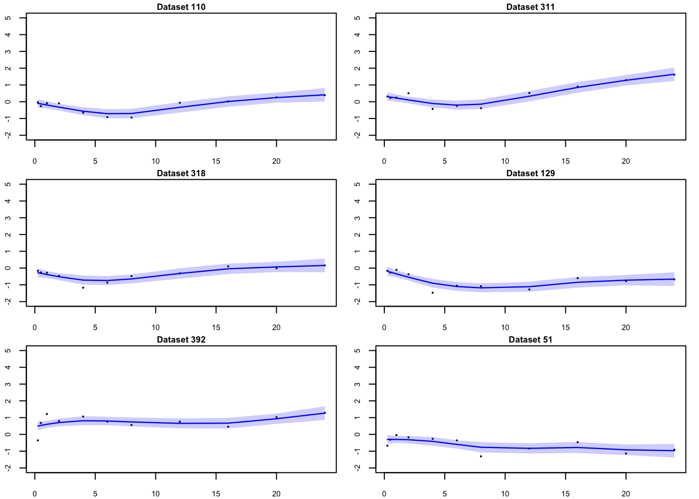

Iyer
Ziang Zhang
2024-12-03
Last updated: 2024-12-04
Checks: 7 0
Knit directory: FASHresultsummary/
This reproducible R Markdown analysis was created with workflowr (version 1.7.1). The Checks tab describes the reproducibility checks that were applied when the results were created. The Past versions tab lists the development history.
Great! Since the R Markdown file has been committed to the Git repository, you know the exact version of the code that produced these results.
Great job! The global environment was empty. Objects defined in the global environment can affect the analysis in your R Markdown file in unknown ways. For reproduciblity it’s best to always run the code in an empty environment.
The command set.seed(20240507) was run prior to running
the code in the R Markdown file. Setting a seed ensures that any results
that rely on randomness, e.g. subsampling or permutations, are
reproducible.
Great job! Recording the operating system, R version, and package versions is critical for reproducibility.
Nice! There were no cached chunks for this analysis, so you can be confident that you successfully produced the results during this run.
Great job! Using relative paths to the files within your workflowr project makes it easier to run your code on other machines.
Great! You are using Git for version control. Tracking code development and connecting the code version to the results is critical for reproducibility.
The results in this page were generated with repository version d1c8c95. See the Past versions tab to see a history of the changes made to the R Markdown and HTML files.
Note that you need to be careful to ensure that all relevant files for
the analysis have been committed to Git prior to generating the results
(you can use wflow_publish or
wflow_git_commit). workflowr only checks the R Markdown
file, but you know if there are other scripts or data files that it
depends on. Below is the status of the Git repository when the results
were generated:
Ignored files:
Ignored: .DS_Store
Ignored: .Rhistory
Ignored: .Rproj.user/
Ignored: analysis/.DS_Store
Ignored: analysis/.Rhistory
Ignored: analysis/figure/
Ignored: code/.DS_Store
Ignored: code/.Rhistory
Ignored: code/cpp/.DS_Store
Ignored: data/.DS_Store
Ignored: data/expression_data/.DS_Store
Ignored: output/.DS_Store
Ignored: output/example/.DS_Store
Ignored: output/example/figure/
Ignored: output/expression/.DS_Store
Ignored: output/simulation_pollution/.DS_Store
Ignored: output/simulation_pollution/figure/
Untracked files:
Untracked: data/Iyer/
Untracked: output/Iyer/
Untracked: output/expression/L_matrix 2.rda
Untracked: output/expression/L_matrix_1.rda
Untracked: output/expression/L_matrix_10.rda
Untracked: output/expression/L_matrix_11.rda
Untracked: output/expression/L_matrix_12.rda
Untracked: output/expression/L_matrix_13.rda
Untracked: output/expression/L_matrix_14.rda
Untracked: output/expression/L_matrix_15.rda
Untracked: output/expression/L_matrix_16.rda
Untracked: output/expression/L_matrix_17.rda
Untracked: output/expression/L_matrix_18.rda
Untracked: output/expression/L_matrix_19.rda
Untracked: output/expression/L_matrix_2.rda
Untracked: output/expression/L_matrix_3.rda
Untracked: output/expression/L_matrix_4 2.rda
Untracked: output/expression/L_matrix_4.rda
Untracked: output/expression/L_matrix_5.rda
Untracked: output/expression/L_matrix_6.rda
Untracked: output/expression/L_matrix_7.rda
Untracked: output/expression/L_matrix_8.rda
Untracked: output/expression/L_matrix_9.rda
Untracked: output/expression/datasets_1.rda
Untracked: output/expression/datasets_10.rda
Untracked: output/expression/datasets_11.rda
Untracked: output/expression/datasets_12.rda
Untracked: output/expression/datasets_13.rda
Untracked: output/expression/datasets_14.rda
Untracked: output/expression/datasets_15.rda
Untracked: output/expression/datasets_16.rda
Untracked: output/expression/datasets_17.rda
Untracked: output/expression/datasets_18.rda
Untracked: output/expression/datasets_19.rda
Untracked: output/expression/datasets_2.rda
Untracked: output/expression/datasets_3.rda
Untracked: output/expression/datasets_4.rda
Untracked: output/expression/datasets_5.rda
Untracked: output/expression/datasets_6.rda
Untracked: output/expression/datasets_7.rda
Untracked: output/expression/datasets_8.rda
Untracked: output/expression/datasets_9.rda
Untracked: output/expression/fitted_pos_results1.rda
Untracked: output/expression/fitted_pos_results10.rda
Untracked: output/expression/fitted_pos_results11.rda
Untracked: output/expression/fitted_pos_results12.rda
Untracked: output/expression/fitted_pos_results13.rda
Untracked: output/expression/fitted_pos_results14.rda
Untracked: output/expression/fitted_pos_results15.rda
Untracked: output/expression/fitted_pos_results16.rda
Untracked: output/expression/fitted_pos_results17.rda
Untracked: output/expression/fitted_pos_results18.rda
Untracked: output/expression/fitted_pos_results19.rda
Untracked: output/expression/fitted_pos_results2.rda
Untracked: output/expression/fitted_pos_results3.rda
Untracked: output/expression/fitted_pos_results4.rda
Untracked: output/expression/fitted_pos_results5.rda
Untracked: output/expression/fitted_pos_results6.rda
Untracked: output/expression/fitted_pos_results7.rda
Untracked: output/expression/fitted_pos_results8.rda
Untracked: output/expression/fitted_pos_results9.rda
Untracked: visualize_expression.R
Unstaged changes:
Modified: code/expression.R
Note that any generated files, e.g. HTML, png, CSS, etc., are not included in this status report because it is ok for generated content to have uncommitted changes.
These are the previous versions of the repository in which changes were
made to the R Markdown (analysis/Iyer.rmd) and HTML
(docs/Iyer.html) files. If you’ve configured a remote Git
repository (see ?wflow_git_remote), click on the hyperlinks
in the table below to view the files as they were in that past version.
| File | Version | Author | Date | Message |
|---|---|---|---|---|
| Rmd | d1c8c95 | Ziang Zhang | 2024-12-04 | workflowr::wflow_publish("analysis/Iyer.rmd") |
Introduction
library(BayesGP)
library(TMB)Warning: package 'TMB' was built under R version 4.3.3library(Matrix)
library(splines)
library(parallel)
library(ggplot2)
library(reshape2)
library(mixsqp)
library(tidyverse)── Attaching core tidyverse packages ──────────────────────── tidyverse 2.0.0 ──
✔ dplyr 1.1.4 ✔ readr 2.1.5
✔ forcats 1.0.0 ✔ stringr 1.5.1
✔ lubridate 1.9.3 ✔ tibble 3.2.1
✔ purrr 1.0.2 ✔ tidyr 1.3.1
── Conflicts ────────────────────────────────────────── tidyverse_conflicts() ──
✖ tidyr::expand() masks Matrix::expand()
✖ dplyr::filter() masks stats::filter()
✖ dplyr::lag() masks stats::lag()
✖ tidyr::pack() masks Matrix::pack()
✖ tidyr::unpack() masks Matrix::unpack()
ℹ Use the conflicted package (<http://conflicted.r-lib.org/>) to force all conflicts to become errorslibrary(mashr)Loading required package: ashrcpp_dir <- paste0(getwd(), "/code/cpp")
function_dir <- paste0(getwd(), "/code/function")
result_dir <- paste0(getwd(), "/output/Iyer")
data_dir <- paste0(getwd(), "/data/Iyer")
source(paste0(function_dir, "/functions_fitting_Gaussian.R"))
dyn.load(TMB::dynlib(paste0(cpp_dir, "/Gaussian_theta_known")))
dyn.load(TMB::dynlib(paste0(cpp_dir, "/Gaussian_just_fixed")))
load(paste0(data_dir, "/Iyer_expression.rda"))
load(paste0(data_dir, "/sigmaE_Iyer.rda"))Create a list of 517 datasets, one for each gene:
all_gene <- Iyer_expression$`Cluster order`
datasets <- lapply(1:517, function(i) {
data.frame(
x = c(15, 30, 60, 120, 240, 360, 480, 720, 960, 1200, 1440)/60,
y = as.numeric(Iyer_expression[i,6:16]),
sigmaE = sigmaE[i]
)
})Doing EB to learn the mixture weights:
set.seed(123)
p_vec <- 2
log_prec <- seq(5,15,length=30)
psd_vec <- c(1/exp(.5*log_prec), 0)
# Using the FEM:
L_vecs <- mclapply(datasets, function(dataset) {
compute_log_likelihood_ospline_seq2(
x = dataset$x,
y = dataset$y,
p = p_vec,
num_knots = 10,
psd_iwp_vector = psd_vec,
pred_step = 15/60,
betaprec = 0.001,
sd_gaussian = 0.2207696
)
}, mc.cores = 1)
L_matrix <- do.call(rbind, L_vecs)
save(L_matrix, file = paste0(result_dir, "/L_matrix.rda"))Compute the Posterior:
fit.sqp <- mixsqp(L = L_matrix, log = TRUE)Running mix-SQP algorithm 0.3-54 on 517 x 31 matrix
convergence tol. (SQP): 1.0e-08
conv. tol. (active-set): 1.0e-10
zero threshold (solution): 1.0e-08
zero thresh. (search dir.): 1.0e-14
l.s. sufficient decrease: 1.0e-02
step size reduction factor: 7.5e-01
minimum step size: 1.0e-08
max. iter (SQP): 1000
max. iter (active-set): 20
number of EM iterations: 10
Computing SVD of 517 x 31 matrix.
Matrix is not low-rank; falling back to full matrix.
iter objective max(rdual) nnz stepsize max.diff nqp nls
1 +9.136162202e-01 -- EM -- 31 1.00e+00 3.49e-02 -- --
2 +8.666324977e-01 -- EM -- 31 1.00e+00 1.86e-02 -- --
3 +8.465885738e-01 -- EM -- 31 1.00e+00 1.32e-02 -- --
4 +8.356405332e-01 -- EM -- 31 1.00e+00 1.04e-02 -- --
5 +8.289261965e-01 -- EM -- 31 1.00e+00 8.54e-03 -- --
6 +8.244477376e-01 -- EM -- 31 1.00e+00 7.24e-03 -- --
7 +8.212575722e-01 -- EM -- 31 1.00e+00 6.28e-03 -- --
8 +8.188657649e-01 -- EM -- 31 1.00e+00 5.54e-03 -- --
9 +8.170005482e-01 -- EM -- 31 1.00e+00 4.96e-03 -- --
10 +8.155015049e-01 -- EM -- 31 1.00e+00 4.48e-03 -- --
1 +8.142684823e-01 +4.082e-02 31 ------ ------ -- --
2 +8.098609079e-01 +2.741e-02 11 1.00e+00 3.00e-01 20 1
3 +8.021548748e-01 +4.172e-03 7 1.00e+00 4.48e-01 15 1
4 +8.021434089e-01 +3.421e-05 8 1.00e+00 2.81e-02 7 1
5 +8.021434079e-01 -2.501e-08 8 1.00e+00 3.33e-04 4 1
Optimization took 0.00 seconds.
Convergence criteria met---optimal solution found.numiter <- nrow(fit.sqp$progress)
plot(1:numiter,fit.sqp$progress$objective,type = "b",
pch = 20,lwd = 2,xlab = "SQP iteration",
ylab = "objective",xaxp = c(1,numiter,numiter - 1))prior_weight <- data.frame(p = rep(p_vec, each = length(psd_vec)), psd_iwp = psd_vec, prior_weight = fit.sqp$x)
posterior_matrix <- matrix(0, nrow = nrow(L_matrix), ncol = ncol(L_matrix))
for(i in 1:nrow(L_matrix)){
posterior_matrix[i,] <- exp(L_matrix[i,] - max(L_matrix[i,]) + log(fit.sqp$x))
posterior_matrix[i,] <- posterior_matrix[i,]/sum(posterior_matrix[i,])
}
colnames(posterior_matrix) <- paste0(p_vec,"_",psd_vec)
posterior_weights_matrix <- posterior_matrixVisualize the posterior weights:
mean_psd <- apply(posterior_weights_matrix, 1, function(x) {
weighted_psd <- as.numeric(sub("*._", "", colnames(posterior_weights_matrix)))
sum(x * weighted_psd)
})
sorted_index <- order(mean_psd)
sorted_posterior_weights_matrix <- posterior_weights_matrix[sorted_index, ]
sorted_posterior_weights_df <- as.data.frame(sorted_posterior_weights_matrix)
sorted_posterior_weights_df$id <- all_gene[sorted_index]
melted_data_sorted <- melt(sorted_posterior_weights_df, id.vars = "id")
melted_data_sorted$variable2 <- sub("_.*", "", melted_data_sorted$variable)
melted_data_sorted$variable3 <- (round(as.numeric(sub("*._", "", melted_data_sorted$variable)), 3))
ggplot(melted_data_sorted, aes(x = factor(id, levels = sorted_posterior_weights_df$id), y = value, fill = variable3)) +
geom_bar(stat = "identity") +
labs(x = "Gene", y = "Weight", fill = "PSD") +
ggtitle("Structure Plot of Posterior Weights") +
coord_flip() +
scale_fill_gradient(low = "white", high = "blue") +
theme(
axis.text.y = element_blank(),
axis.ticks.y = element_blank(),
panel.background = element_rect(fill = "white", colour = "grey"),
plot.background = element_rect(fill = "white", colour = NA)
)Let’s group them into num_clusters groups, based on the
quantiles of the mean PSD:
mean_psd_ordered <- mean_psd[sorted_index]
quantiles <- c(0, 0.004, 0.01, 0.025, 0.05)
quantile_groups <- cut(mean_psd_ordered, breaks = quantiles,
include.lowest = TRUE, labels = FALSE)
table(quantile_groups)quantile_groups
1 2 3 4
397 95 19 6 num_clusters <- length(unique(quantile_groups))
sorted_posterior_weights_df$cluster <- quantile_groups
melted_data_quantiles <- melt(sorted_posterior_weights_df, id.vars = c("id", "cluster"))
melted_data_quantiles$variable2 <- sub("_.*", "", melted_data_quantiles$variable)
melted_data_quantiles$variable3 <- round(as.numeric(sub(".*_", "", melted_data_quantiles$variable)), 3)
melted_data_quantiles <- melted_data_quantiles %>% arrange(cluster)
# Ensure the 'id' factor is ordered according to the sorted mean_psd
melted_data_quantiles$id <- factor(melted_data_quantiles$id, levels = sorted_posterior_weights_df$id)
# Plotting with facets by cluster and proper sorting of 'id'
ggplot(melted_data_quantiles, aes(x = factor(id, levels = sorted_posterior_weights_df$id), y = value, fill = variable3)) +
geom_bar(stat = "identity") +
labs(x = "Gene", y = "Weight", fill = "PSD Level") +
ggtitle("Structure Plot of Posterior Weights by Quantile Group") +
coord_flip() +
scale_fill_gradient(low = "white", high = "blue") +
facet_wrap(~cluster, scales = "free_y") + # Faceting by cluster while keeping order
theme_minimal() +
theme(
axis.text.y = element_blank(),
axis.ticks.y = element_blank(),
panel.background = element_rect(fill = "white", colour = "grey"),
plot.background = element_rect(fill = "white", colour = NA),
strip.background = element_rect(fill = "lightblue", colour = "deepskyblue", size = 1),
strip.text = element_text(face = "bold")
)# Automatically extract gene IDs for each cluster
num_genes_per_cluster <- 6
genes_per_cluster <- list()
for (i in 1:num_clusters) {
genes_per_cluster[[i]] <- as.numeric(sorted_posterior_weights_df$id[sorted_posterior_weights_df$cluster == i][1:num_genes_per_cluster])
}Take a look at the inferred trajectories:
num_datasets <- length(datasets)
num_weights <- sum(prior_weight$prior_weight != 0)
posterior_weights_matrix <- matrix(nrow = num_datasets, ncol = num_weights)
# Loop through each dataset and perform fitting
fitted_datasets <- list()
# Using FEM:
for (i in seq_along(datasets)) {
dataset <- datasets[[i]]
fit_result_final <- fit_ospline_with_prior2(
num_cores = 1,
x = dataset$x,
y = dataset$y,
num_knots = 10,
prior_weight = prior_weight,
betaprec = 0.001,
sd_gaussian = 0.2207696,
pred_step = 15/60
)
fitted_datasets[[i]] <- aggregate_fit_with_prior(x = dataset$x, fit_results_with_prior = fit_result_final)$summary_df
}
save(fitted_datasets, file = paste0(result_dir, "/fitted_datasets.rda"))Show some selected results from each of the four clusters:
par(mfrow = c(3, 2), mar = c(2, 2, 1, 1))
for (i in genes_per_cluster[[1]]) {
plot(
datasets[[i]]$x,
datasets[[i]]$y,
type = 'p',
main = paste("Dataset", i),
xlab = "x",
ylab = "y",
ylim = c(-2,5),
cex = 0.2,
cex.main = 0.8,
cex.lab = 0.7,
cex.axis = 0.7
)
lines(fitted_datasets[[i]]$x,
fitted_datasets[[i]]$mean,
col = "blue",
lwd = 1.2)
polygon(
c(fitted_datasets[[i]]$x, rev(fitted_datasets[[i]]$x)),
c(fitted_datasets[[i]]$lower, rev(fitted_datasets[[i]]$upper)),
col = rgb(0, 0, 1, 0.2),
border = NA
)
}par(mfrow = c(1, 1))par(mfrow = c(3, 2), mar = c(2, 2, 1, 1))
for (i in genes_per_cluster[[2]]) {
plot(
datasets[[i]]$x,
datasets[[i]]$y,
type = 'p',
main = paste("Dataset", i),
xlab = "x",
ylab = "y",
ylim = c(-2,5),
cex = 0.2,
cex.main = 0.8,
cex.lab = 0.7,
cex.axis = 0.7
)
lines(fitted_datasets[[i]]$x,
fitted_datasets[[i]]$mean,
col = "blue",
lwd = 1.2)
polygon(
c(fitted_datasets[[i]]$x, rev(fitted_datasets[[i]]$x)),
c(fitted_datasets[[i]]$lower, rev(fitted_datasets[[i]]$upper)),
col = rgb(0, 0, 1, 0.2),
border = NA
)
}
par(mfrow = c(1, 1))par(mfrow = c(3, 2), mar = c(2, 2, 1, 1))
for (i in genes_per_cluster[[3]]) {
plot(
datasets[[i]]$x,
datasets[[i]]$y,
type = 'p',
main = paste("Dataset", i),
xlab = "x",
ylab = "y",
ylim = c(-2,5),
cex = 0.2,
cex.main = 0.8,
cex.lab = 0.7,
cex.axis = 0.7
)
lines(fitted_datasets[[i]]$x,
fitted_datasets[[i]]$mean,
col = "blue",
lwd = 1.2)
polygon(
c(fitted_datasets[[i]]$x, rev(fitted_datasets[[i]]$x)),
c(fitted_datasets[[i]]$lower, rev(fitted_datasets[[i]]$upper)),
col = rgb(0, 0, 1, 0.2),
border = NA
)
}par(mfrow = c(1, 1))par(mfrow = c(3, 2), mar = c(2, 2, 1, 1))
for (i in genes_per_cluster[[4]]) {
plot(
datasets[[i]]$x,
datasets[[i]]$y,
type = 'p',
main = paste("Dataset", i),
xlab = "x",
ylab = "y",
ylim = c(-2,5),
cex = 0.2,
cex.main = 0.8,
cex.lab = 0.7,
cex.axis = 0.7
)
lines(fitted_datasets[[i]]$x,
fitted_datasets[[i]]$mean,
col = "blue",
lwd = 1.2)
polygon(
c(fitted_datasets[[i]]$x, rev(fitted_datasets[[i]]$x)),
c(fitted_datasets[[i]]$lower, rev(fitted_datasets[[i]]$upper)),
col = rgb(0, 0, 1, 0.2),
border = NA
)
}
par(mfrow = c(1, 1))Produce a plot where the posterior mean of each gene from the given cluster is plotted:
all_genes_per_cluster <- list()
for (i in 1:num_clusters) {
all_genes_per_cluster[[i]] <- as.numeric(sorted_posterior_weights_df$id[sorted_posterior_weights_df$cluster == i])
}# for cluster 1
par(mfrow = c(1, 1), mar = c(5, 4, 4, 2))
# initialize the plot
plot(
fitted_datasets[[all_genes_per_cluster[[1]][1]]]$x,
fitted_datasets[[all_genes_per_cluster[[1]][1]]]$mean,
type = 'l',
# choose a very transparent color
col = rgb(0, 0, 1, 0.1),
xlab = "x",
ylab = "y",
ylim = c(-2,5),
cex = 0.2,
cex.main = 0.8,
cex.lab = 0.7,
cex.axis = 0.7,
)
for (i in all_genes_per_cluster[[1]]) {
lines(
fitted_datasets[[i]]$x,
fitted_datasets[[i]]$mean,
col = rgb(0, 0, 1, 0.1),
lwd = 1.5
)
}# for cluster 2
par(mfrow = c(1, 1), mar = c(5, 4, 4, 2))
# initialize the plot
plot(
fitted_datasets[[all_genes_per_cluster[[2]][1]]]$x,
fitted_datasets[[all_genes_per_cluster[[2]][1]]]$mean,
type = 'l',
# choose a very transparent color
col = rgb(0, 0, 1, 0.1),
xlab = "x",
ylab = "y",
ylim = c(-2,5),
cex = 0.2,
cex.main = 0.8,
cex.lab = 0.7,
cex.axis = 0.7,
)
for (i in all_genes_per_cluster[[2]]) {
lines(
fitted_datasets[[i]]$x,
fitted_datasets[[i]]$mean,
col = rgb(0, 0, 1, 0.2),
lwd = 1.5
)
}# for cluster 3
par(mfrow = c(1, 1), mar = c(5, 4, 4, 2))
# initialize the plot
plot(
fitted_datasets[[all_genes_per_cluster[[3]][1]]]$x,
fitted_datasets[[all_genes_per_cluster[[3]][1]]]$mean,
type = 'l',
# choose a very transparent color
col = rgb(0, 0, 1, 0.1),
xlab = "x",
ylab = "y",
ylim = c(-2,5),
cex = 0.2,
cex.main = 0.8,
cex.lab = 0.7,
cex.axis = 0.7,
)
for (i in all_genes_per_cluster[[3]]) {
lines(
fitted_datasets[[i]]$x,
fitted_datasets[[i]]$mean,
col = rgb(0, 0, 1, 0.2),
lwd = 1.5
)
}# for cluster 4
par(mfrow = c(1, 1), mar = c(5, 4, 4, 2))
# initialize the plot
plot(
fitted_datasets[[all_genes_per_cluster[[4]][1]]]$x,
fitted_datasets[[all_genes_per_cluster[[4]][1]]]$mean,
type = 'l',
# choose a very transparent color
col = rgb(0, 0, 1, 0.1),
xlab = "x",
ylab = "y",
ylim = c(-2,5),
cex = 0.2,
cex.main = 0.8,
cex.lab = 0.7,
cex.axis = 0.7,
)
for (i in all_genes_per_cluster[[4]]) {
lines(
fitted_datasets[[i]]$x,
fitted_datasets[[i]]$mean,
col = rgb(0, 0, 1, 0.2),
lwd = 1.5
)
}
sessionInfo()R version 4.3.1 (2023-06-16)
Platform: aarch64-apple-darwin20 (64-bit)
Running under: macOS Monterey 12.7.4
Matrix products: default
BLAS: /Library/Frameworks/R.framework/Versions/4.3-arm64/Resources/lib/libRblas.0.dylib
LAPACK: /Library/Frameworks/R.framework/Versions/4.3-arm64/Resources/lib/libRlapack.dylib; LAPACK version 3.11.0
locale:
[1] en_US.UTF-8/en_US.UTF-8/en_US.UTF-8/C/en_US.UTF-8/en_US.UTF-8
time zone: America/Chicago
tzcode source: internal
attached base packages:
[1] parallel splines stats graphics grDevices utils datasets
[8] methods base
other attached packages:
[1] mashr_0.2.79 ashr_2.2-66 lubridate_1.9.3 forcats_1.0.0
[5] stringr_1.5.1 dplyr_1.1.4 purrr_1.0.2 readr_2.1.5
[9] tidyr_1.3.1 tibble_3.2.1 tidyverse_2.0.0 mixsqp_0.3-54
[13] reshape2_1.4.4 ggplot2_3.5.1 Matrix_1.6-4 TMB_1.9.15
[17] BayesGP_0.1.3 workflowr_1.7.1
loaded via a namespace (and not attached):
[1] gtable_0.3.6 xfun_0.48 bslib_0.8.0 processx_3.8.4
[5] lattice_0.22-6 callr_3.7.6 tzdb_0.4.0 vctrs_0.6.5
[9] tools_4.3.1 ps_1.8.0 generics_0.1.3 fansi_1.0.6
[13] highr_0.11 pkgconfig_2.0.3 SQUAREM_2021.1 assertthat_0.2.1
[17] truncnorm_1.0-9 lifecycle_1.0.4 farver_2.1.2 compiler_4.3.1
[21] git2r_0.33.0 munsell_0.5.1 getPass_0.2-4 httpuv_1.6.15
[25] htmltools_0.5.8.1 sass_0.4.9 yaml_2.3.10 later_1.3.2
[29] pillar_1.9.0 jquerylib_0.1.4 whisker_0.4.1 rmeta_3.0
[33] cachem_1.1.0 abind_1.4-8 tidyselect_1.2.1 digest_0.6.37
[37] mvtnorm_1.3-1 stringi_1.8.4 labeling_0.4.3 rprojroot_2.0.4
[41] fastmap_1.2.0 grid_4.3.1 invgamma_1.1 colorspace_2.1-1
[45] cli_3.6.3 magrittr_2.0.3 utf8_1.2.4 withr_3.0.2
[49] scales_1.3.0 promises_1.3.0 timechange_0.3.0 rmarkdown_2.28
[53] httr_1.4.7 hms_1.1.3 evaluate_1.0.1 knitr_1.48
[57] irlba_2.3.5.1 rlang_1.1.4 Rcpp_1.0.13-1 glue_1.8.0
[61] rstudioapi_0.16.0 jsonlite_1.8.9 R6_2.5.1 plyr_1.8.9
[65] fs_1.6.4